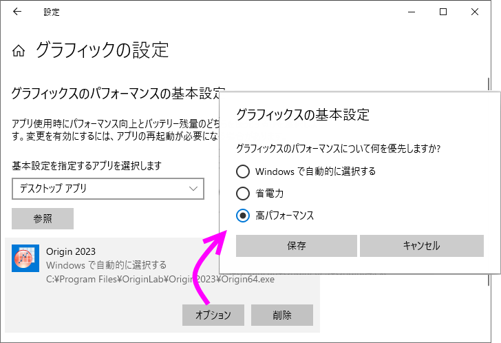

FAQ-906 Originが遅いまたは応答しない場合どうしたらいいでしょうか？
Origin-slow-Troubleshoot
最終更新日：2022/8/23
Step1.特定のプロジェクトもしくは一般的な問題で速度低下が発生しているのかどうかを確認します
非常に単純なデータを含む新しいプロジェクトファイルで速度が低下するのと同じ手順を試してください。Originが遅いかどうかを確認してください。
特定のプロジェクトでのみ発生する場合は、こちらのページを参照して解決法を確認してください。
新しいプロジェクトで作業しているときにも発生する場合は、以下の手順に進みます。
Step2.WindowsがWindows10 Fall Creators Update（2017）を適用したかどうかを確認します
OriginをWindows10で実行していて、Windows 10 Fall Creators Update バージョン1709（2017）を適用している場合、特定の操作（作図メニューを開くなど）の実行中にOriginが遅くなったり、応答しなくなったりすることがあります。この問題はOriginに限定されず、Windowsのみの操作（エクスプローラウィンドウの最小化や最大化など）でも報告されています。
マイクロソフトでは、その後、Windows 10 Fall Creators Updateのアップデートをリリースし、これらを適用することで低速問題を解決する可能性があります。
- Windows設定 > 更新とセキュリティ > 更新プログラムのチェックで利用可能な更新を適用してください。
当てはまらない場合は、以下の手順に進んでください。
Step3.ラップトップPCの「バランス」電源プランが原因かどうかを確認します
ラップトップでOriginを実行していて、「バッテリーセーバー」モードがオンになっている場合、コンピュータのバッテリーが少なくなると、Originを含む一部のアプリケーションの速度が低下します。ラップトップを接続して再充電し、Originを再度お試しください。遅くなくなったかどうか確認します。
または
- 「バッテリーセーバー」モードをオフにする制御の設定は、OSによって少し異なります。例としてWindows10を取り上げますと、
- Windowsのスタートメニューより、設定 > システム > バッテリー と選択します。
- バッテリーの残量が次の数値を下回ったときにバッテリー節約機能を自動的にオンにするのチェックを外します。
当てはまらない場合は、次の手順に進んでください。
パフォーマンスを改善するために試すことができること
1.ローカルPCにOriginをインストールし、Originの優先順位を高く設定
To set higher priority for Origin:
- Windowsタスクマネージャーダイアログの詳細タブを開きます。
- 「Origin64.exe」を探して右クリックし、優先度の設定：高を選択します。
2.ユーザファイルフォルダをローカルPCにリセットします
- スクリプトウィンドウで、レジストリ内のユーザフォルダパスの値をクリアするために以下のスクリプトを実行します。すると次にOriginを起動するときにはUser
Filesフォルダがリセットされます。
del –path
- Originを閉じます。
- Originを再起動します。ローカルディスク上で、ユーザファイルフォルダとして新しいフォルダを指定します。
| Note:
Originユーザーファイルフォルダ（または他のOrigin関連フォルダ）が「DropBox」、「Googleドライブ」（バックアップと同期）、「Microsoft
OneDrive」などのクラウド同期サービスに設定されている場合、動作が重くなる問題が発生する可能性があります。上述のように、ユーザファイルフォルダはローカルに再設定するようお願いいたします。
|
上記の対策で効果が無い場合は、次のセクションをお試しください。
速度低下を引き起こす可能性のある既知の問題
1.作図の詳細・軸ダイアログ
作図の詳細および軸ダイアログは多くのタブを持ち、開いたときにコンパイルするのに時間がかかる可能性があります。ただし、ダイアログを1〜2回開くと、速度が向上します。
2.非単調な破線のプロット
非単調なYデータをプロットし、「実線」ではない線のスタイルを設定すると、Originが遅くなったり、フリーズしたりする可能性があります。
- 環境設定：オプション - グラフタブを選択します。
- ページビューで破線の形式通りに表示チェックを外します。
または
- @DLMを0に設定します。こちらのページの詳細な手順を参照してください。
3.古いOpenGLバージョンのグラフィックカード
この速度低下は、3Dグラフでのみ発生します。
- グラフィックカードのドライバを更新します。デバイス マネージャーを開きます。ディスプレイ アダプターを開きます。グラフィックカードを右クリックし、ドライバーの更新を選択します。
- 統合グラフィックカードから専用グラフィックカードなど、より優れたグラフィックカードを使用するように更新します。
- Originソフトウェアのパフォーマンスを高く設定し、お使いのグラフィックカードが許容する最高のOpenGLパフォーマンスを確保します。
- Windowsの設定で、Originのパフォーマンスを高くします。Windows 10での操作例を取り上げます。設定
> ディスプレイ > グラフィックの設定を選択します。参照をクリックしてOriginのexeファイルを追加し、オプションを選択します。グラフィックの基本設定ダイアログで、グラフィックパフォーマンスの設定を高パフォーマンスに設定します。
- 
- グラフィックスカードに独自のアプリケーションがインストールされている場合は、そのアプリケーションでも高いパフォーマンスに設定することもできます。NVIDIAの場合を例にとります。NVIDIAコントロールパネルを開きます。左パネルで3D設定
> 3D設定の管理を選択します。右パネルで、グローバル設定タブを開き、高パフォーマンスNVIDIAプロセッサを選択します。プログラム設定タブを開きます。1でOriginプログラムを選択して追加し、2で高パフォーマンスNVIDIAプロセッサを選択します。

4.オンライン辞書
オンライン辞書（Youdao Dictionaryなど）を使用して画面上の単語を選択して翻訳すると、コンピュータリソースが累積的に消費され、Originのパフォーマンスが低下することがあります。
- Origin使用時はオンライン辞書を無効にします。
キーワード：パフォーマンス,
速度, GetPixel, SetPixel, ツールバー, bitmap, ,ビットマップ, グラフィックス, 遅い, 固まる, フリーズ